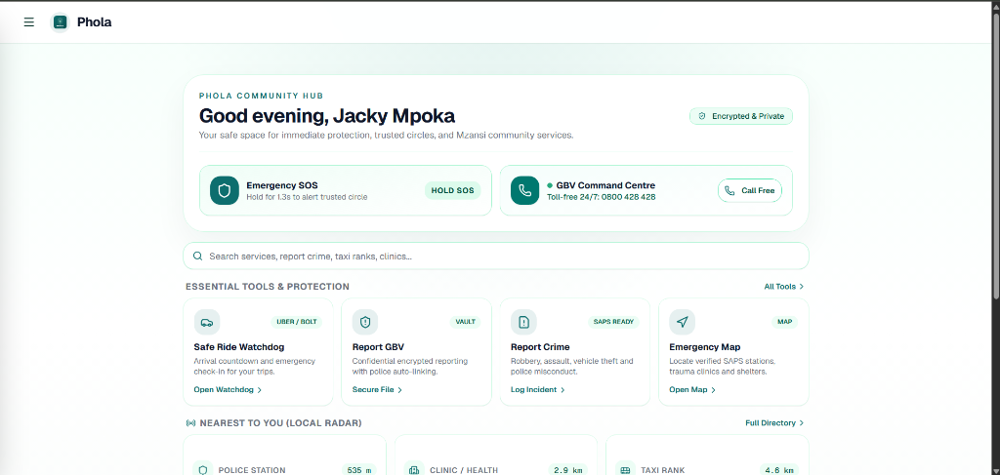
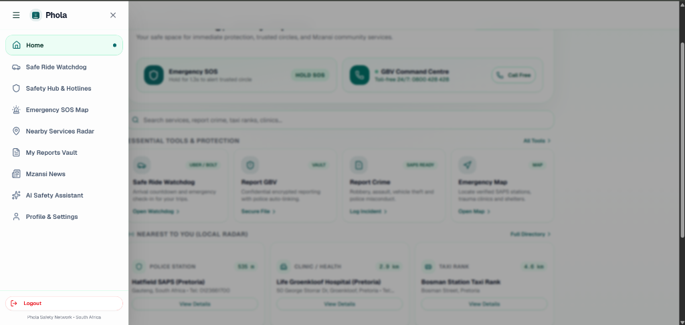
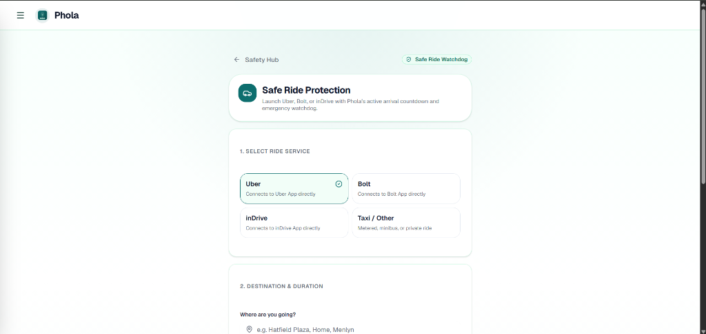
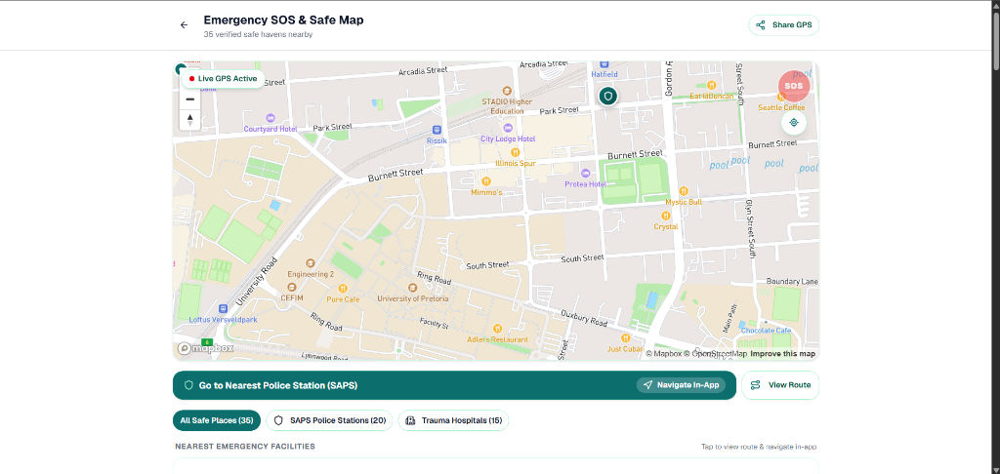
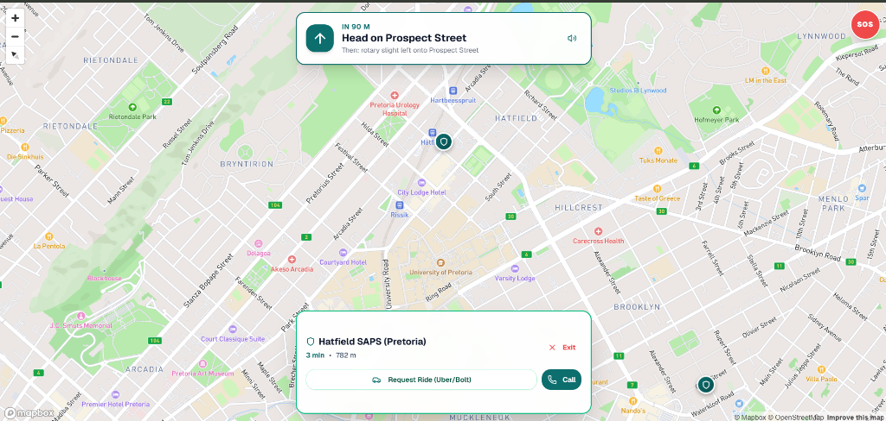
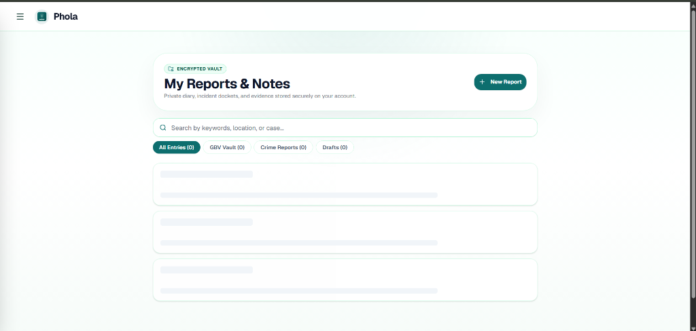
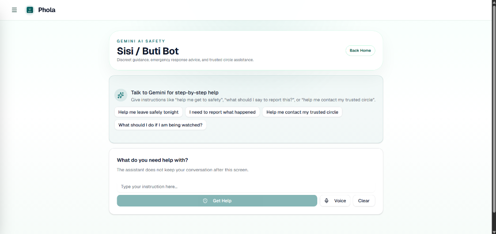
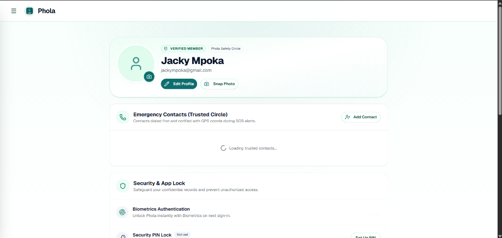

Phola combines real-time transit anomaly detection, native in-app turn-by-turn navigation to SAPS police stations, 1-tap SOS panic, and encrypted digital evidence preservation.
Vulnerability after dark, delayed emergency response, and evidence destruction.
A multi-layered safety shield designed specifically for South African commuters.
How Phola protects a student returning home late from campus.
Central safety hub displaying real-time emergency hotlines and nearest facility radar.

Clean, rapid access to all emergency modules, evidence vault, and settings.

Protects commuters across e-hailing apps, metered cabs, and minibus taxis.

Real-time GPS tracking with verified police stations and trauma centers in Pretoria.

Turn-by-turn routing directly to Hatfield SAPS without relying on external map apps.

Client-side encrypted diary and evidence repository complying with POPIA.

Context-aware, discreet safety guidance powered by Google Gemini AI.

Hardware-backed authentication and POPIA-compliant trusted circle management.

Modern, hybrid, and fault-tolerant architecture built for offline durability.
Unlike competing panic buttons that divert to Google Maps, Phola navigates entirely within the secure app container.
Adherence to South African Privacy Law and Defense-in-Depth Cryptography.
Viable, scalable, and socially impactful business strategy.
| Problem & Segments | Value Proposition & Solution | Channels & Advantage | Revenue Streams | Cost Structure |
|---|---|---|---|---|
|
Problem: • 1 in 3 women face GBV • Night e-hailing risks • 45+ min 10111 response delay • Evidence destruction Customers: • Commuters & students • Night healthcare staff • Campuses & CPFs |
Unique Value Prop: "Your autonomous travel watchdog and GBV companion with in-app police navigation and zero-knowledge vaults." Solution: • SafeRide trip watchdog • In-app turn-by-turn routing • 1-Tap SOS to 10111/112 • Stealth weather exit • 11 official SA languages |
Channels: • PWA & Play Store • University campus drives • GBV shelter networks (POWA) • Community policing (CPF) Unfair Advantage: • Native in-app navigation • Zero-Knowledge crypto • 11 Official SA languages |
• Free Tier: Public safety & SOS (always free) • Phola Plus: R39/mo armed response integration • B2B Campus: R15/student/mo campus safety portal • CSI & Grants: GBV justice sponsorships |
• Next.js hosting & Supabase DB • Mapbox & OSRM routing APIs • SMS/WhatsApp emergency gateways • POPIA audits & maintenance |
All materials required for judging are live, verified, and ready to inspect.
main:
PHOLA_SUBMISSION_PACK.md.